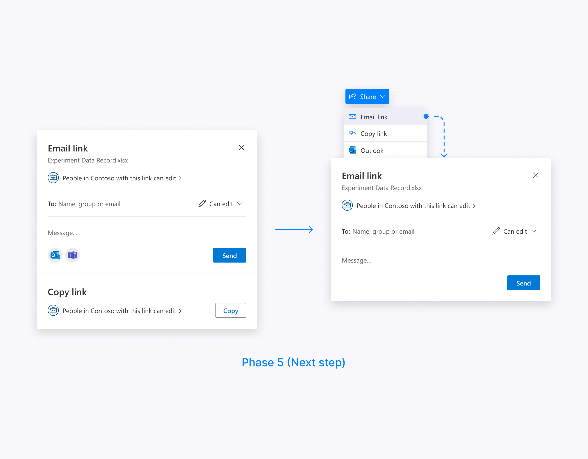
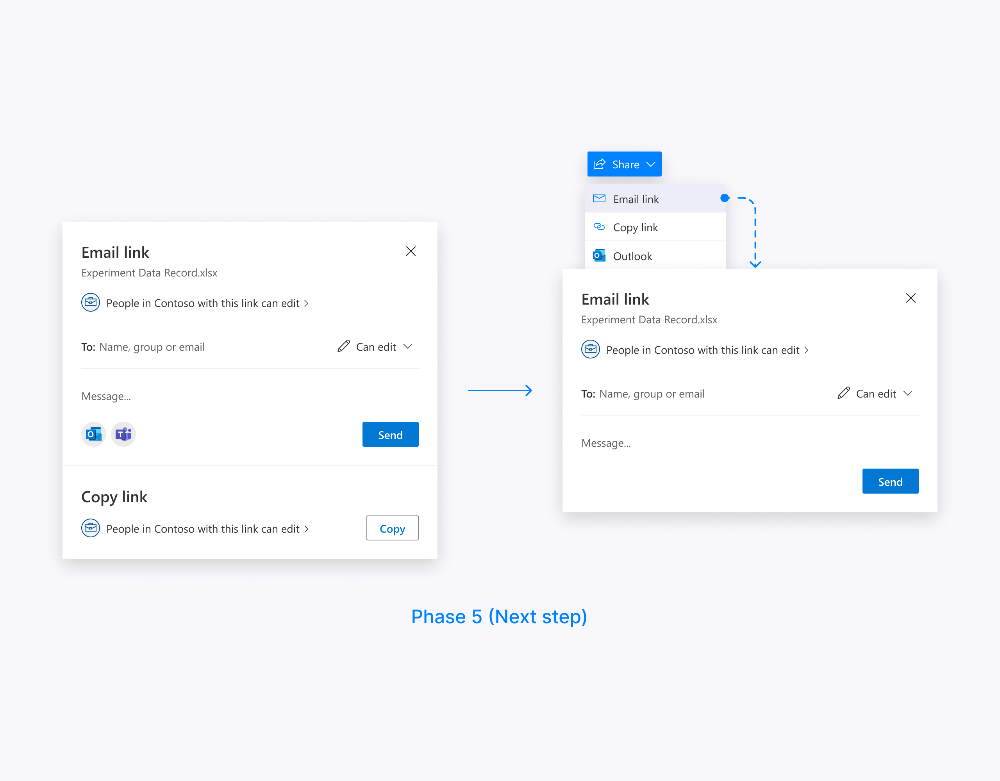
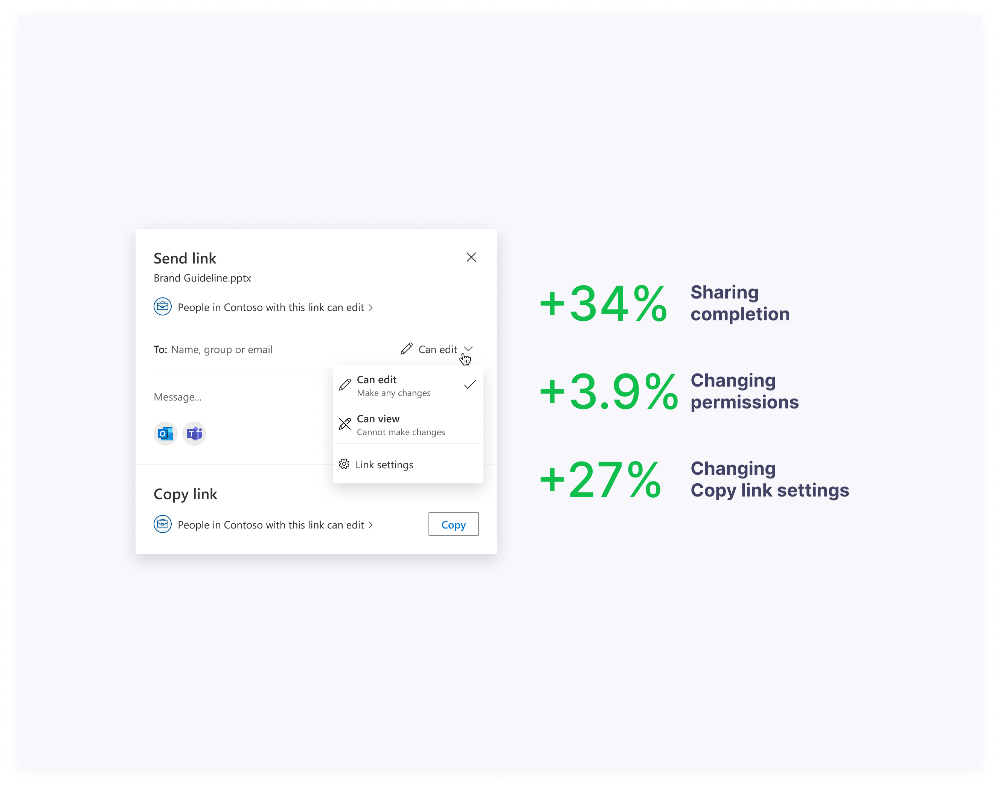

Contribution
I led the sharing experience redesign initiative across the OneDrive web and mobile entry points, in collaboration with a cross-functional team of UX designers, project managers, and engineers, to enhance its features.
Problem
OneDrive owns the Sharing Dialog. It appears in more than 40 endpoints across Microsoft365 family of products. In 2019 our research team conducted a benchmark study and compared OneDrive’s sharing experience to Google Drive and Box.

Even though the overall functionality received a high score, the OneDrive’s sharing experience scored the lowest. We identified several design drawbacks such as inconsistent headers and placement, hidden Role Selector, and unbalanced width.

Users also couldn’t associate link type with the “Copy link” experience.
Process
We organized a series of brainstorming sessions with our partner teams from Microsoft365. After many meetings and design iterations, we settled on a version that addressed all these design problems.

The main idea of the new design was to split user flow into a series of simple decisions (“Email link” plus “Copy link” and other share targets) instead of complicating the sharing dialog surface with all these options.
We made consistent headers across all the endpoints, brought the Role selector into the sharing dialog surface, and increased the width to give the elements a breath.
We introduced a combined “Email link” and “Copy link” experience in the list view on office.com and OneDrive since we couldn’t afford the share menu there.
User testing
To test our assumptions and gather qualitative data we conducted two user studies.


Updates
The positive feedback reassured our design direction and we planned incremental updates to our current version.


 

This approach allowed us to observe the telemetry and assess our design decisions with quantitative data.
As a result, the redesign of the sharing dialog led to a remarkable 34% surge in user engagement and completion of sharing actions. Given that the sharing feature experiences approximately 40 million openings per month, the team's accomplishments are truly impressive.
Thanks for reading!